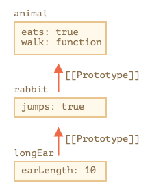
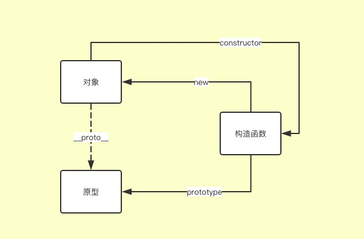

重学JavaScript - 原型和原型链
JS 是一门基于原型的面向对象语言，虽然有 ES6 就有了 class，但实际上还是基于原型来实现面向对象的，class 只是一个语法糖。ca
1 | class A {} |
[[Prototype]]
每个对象都有一个隐藏的属性 [[Prototype]], 该属性就是所谓的原型，它的值是另一个对象的引用或者 null，当我们从 object 中获取一个缺失的属性时，js 会自动向上从原型中获取该属性，这就是所谓的原型继承
[[Prototype]]虽然是隐藏的，但是我们可以通过 __proto__ 来设置原型
1 | let animal = { |

proto
proto 是 [[Prototype]]的（历史遗留的）getter/setter
ES6 中开始可以使用 Object.getPrototypeOf 和 Object.setPrototypeOf 来访问和设置原型对象
prototype
prototype 只是函数的一个属性，也是对象，但它并不是原型, 被构造函数创建的实例对象的[[Prototype]]指向构造函数的prototype
Object.prototype属性表示Object的原型对象
只有函数才有prototype，非函数不存在
1 | var a = function () {}; |
以上三者的关系：

原型链
1 | let animal = {}; |
longEar 的原型是 rabbit，rabbit 的原型是 animal， animal 的原型是 Object.prototype, Object.prototype 的原型是 null， 原型一级一级网上找，直到 null，这就是所谓的原型链。
注意：原型链过程会影响性能，所谓赢适当的分解，避免性能问题
使用不同的方法创建对象和生成原型链
- 使用语法结构创建
1 | var o = {}; |
- 使用构造器创建
1 | function Graph() { |
- 使用 Object.create 创建对象
1 | var a = { a: 1 }; |
- 使用 class 关键字创建对象
1 | class A {} |
new 的实现
1 | function newClass(Fn, ...args) { |
hasOwnProperty 简单实现
1 | function hasOwnProperty(obj, property) { |
instanceof 实现
1 | function instanceOf(obj, proto) { |
参考资料：
原型继承：https://zh.javascript.info/prototype-inheritance
继承与原型链：https://developer.mozilla.org/zh-CN/docs/Web/JavaScript/Inheritance_and_the_prototype_chain